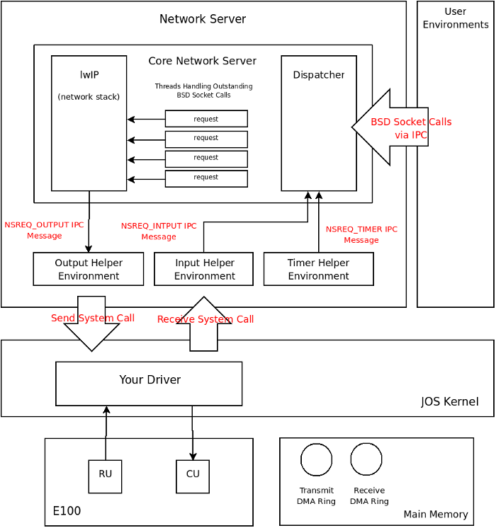

Handed out Thursday, November 10, 2010
Part A due Thursday, November 18, 2010
Part B due Wednesday, November 24, 2010
Now that you have a file system, no self respecting OS should go without a network stack. In this the lab you are going to write a driver for a network interface card. The card will be based on the Intel 82559ER chip, also known as the E100 and eepro100.
Use Git to commit your Lab 5 source, fetch the latest version of the course repository, and then create a local branch called lab6 based on our lab6 branch, origin/lab6:
athena% cd ~/6.828/lab athena% add git athena% git commit -am 'my solution to lab5' Created commit 734fab7: my solution to lab5 4 files changed, 42 insertions(+), 9 deletions(-) athena% git pull Already up-to-date. athena% git checkout -b lab6 origin/lab6 Branch lab6 set up to track remote branch refs/remotes/origin/lab6. Switched to a new branch "lab6" athena% git merge lab5 Merge made by recursive. fs/fs.c | 42 +++++++++++++++++++ 1 files changed, 42 insertions(+), 0 deletions(-) athena%
The network card driver, however, will not be enough to get your OS hooked up to the Internet. In the new lab6 code, we have provided you with a network stack and a network server. As in previous labs, use git to grab the code for this lab, merge in your own code, and explore the contents of the new net/ directory, as well as the new files in kern/.
In addition to writing the driver, you will need to create a system call interface to give access to your driver. You will implement missing network server code to transfer packets between the network stack and your driver. You will also tie everything together by finishing a web server. With the new web server you will be able to serve files from your file system.
Much of the kernel device driver code you will have to write yourself from scratch. There are no skeleton files and no system call interfaces written in stone. For this reason, we recommend that you read the entire assignment write up before starting any individual exercises. Many students find this lab more difficult than previous labs, so please plan your time accordingly.
As before, you will need to do all of the regular exercises described in the lab and at least one challenge problem. Additionally, you will need to write up brief answers to the questions posed in the lab and a short (e.g., one or two paragraph) description of what you did to solve your chosen challenge problem. If you implement more than one challenge problem, you only need to describe one of them in the write-up, though of course you are welcome to do more. Place the write-up in a file called answers-lab6.txt (plain text) or answers-lab6.html (HTML format) in the top level of your lab directory before handing in your work.
We will be using QEMU's user mode network stack which requires no administrative privileges to run. QEMU's documentation has more about user-net here. We've updated the makefile to pass -net user -net nic,model=i82559er to QEMU in order to enable the user-mode network stack and the virtual E100 network card.
User-net can be viewed like a NAT (Network Address Translation) that sits between JOS and the Internet; therefore, while JOS itself can make connections to the Internet, nothing outside of QEMU (including the computer running QEMU) can directly connect to servers running in JOS. QEMU's NAT runs on the 10.0.2.0 subnet: QEMU will assign JOS the IP address 10.0.2.15 by default and provide a router for the virtual network at IP 10.0.2.2. The network server needs to know these defaults, so they are defined in net/ns.h.
JOS's 10.0.2.15 address has no meaning outside the virtual network running inside QEMU, so we can't simply connect to servers running inside JOS. To fix this, we will ask QEMU to run a server listening on some port on your development machine that simply connects through to some port on JOS and shuttles data back and forth between your development machine's network and the virtual network running inside QEMU. The makefile accomplishes this by running QEMU with -redir tcp:4242::7, which tells QEMU to listen on port 4242 and to forward connections to JOS's port 7. After this, executing nc localhost 4242 (or telnet localhost 4242) on your development machine will connect to the server running on port 7 inside JOS.
In this lab, you will run JOS services on ports 7 and 80. The provided makefile takes care of forwarding these two ports for you. To avoid collisions on shared Athena machines, it will generate the local ports based on your user ID. Thus, the easiest way to connect to these two ports is to run make nc-7 or make nc-80 (or the corresponding telnet- rules), which will take care of the port translation for you. These rules only connect to a running QEMU instance; you must start QEMU itself separately. You can also run make which-ports to print out the ports being used.
It is very helpful to examine any packets sent to or received from the host machine. However, since the details of user-net do not allow easy access to the packet flow, our version of QEMU provides a mechanism that dumps every packet that passes through user-net into a file. The file is stored using the pcap format. This popular packet capture file format allows you to use either tcpdump or wireshark to examine both the packet flow and packet structure. You can run QEMU with packet dumping using make qemu QEMUEXTRA="-pcap slirp.cap".
To get a hex/ASCII dump of captured packets use tcpdump like this:
tcpdump -XXnr slirp.cap
Wireshark is a graphical version of tcpdump. If you're working on Athena, Wireshark's predecessor, ethereal, can be used after running add sipbnet.
Note that the -pcap option is only available in our version of QEMU.
We are very lucky to be using emulated hardware. Since the E100 is running in software, the emulated E100 can report to us, in a user readable format, its internal state and any problems it encounters. Normally, such a luxury would not be available to a driver developer writing with bare metal. To turn on E100 debug information use make qemu QEMUEXTRA="-debug-e100". While you can only provide one QEMUEXTRA argument to make, you can add more arguments between the double quotes.
Once the E100 debug command line option is set, the emulated E100 will print debug messages to the terminal where you launched QEMU. It will print lines like this:
EE100 eepro100_write1 addr=Command/Status+1 val=0x20 EE100 disable_interrupt interrupt disable
Note that the -debug-e100 option is only available in our version of QEMU.
You can take debugging using software emulated hardware one step further. If you are ever stuck and do not understand why the driver is not understanding your commands or it is reporting cryptic message, you can look at the emulated hardware source code for hints. The source for the E100 emulated hardware is in the QEMU tarball.
If you are running JOS on your own machine you will need the 6.828 version of QEMU. If you have not already installed our patched version, detailed instructions for building QEMU and the pre-patched source tarball are on the tools page.
Writing a network stack from scratch is hard work. Instead, we will be using lwIP, an open source lightweight TCP/IP protocol suite that among many things includes a network stack. You can find more information on lwIP here. In this assignment, as far as we are concerned, lwIP is a black box that implements a BSD socket interface and has a packet input port and packet output port.
What we call the network server is actually a combination of four environments, they are:
The following diagram shows the different environments and their relationships. The diagram shows the entire system including the device driver which will be covered later.

The core network server environment is composed of the socket call dispatcher
and lwIP itself. The socket call dispatcher works exactly like the file server.
User environments use stubs (found in lib/nsipc.c) to send IPC
messages to the core network environment. If you look at
lib/nsipc.c you will see that we use the same trick as in the file
server to name the core network server: we start the network server right after
the file server thereby forcing the ns to have an envid of 2.
For each user environment IPC, the dispatcher in the network server
calls the appropriate BSD socket
interface function provided by lwIP on behalf of the user.
Regular user environments do not use the nsipc_* calls
directly. Instead, they use the functions in lib/sockets.c,
which provides a file descriptor-based sockets API. Thus, user
environments refer to sockets via file descriptors, just
like how they referred to on-disk files. A number of operations
(connect, accept, etc.) are specific to
sockets, but read, write, and
close go through the normal file descriptor
device-dispatch code in lib/fd.c. Much like how the file
server maintained internal unique ID's for all open files, lwIP also
generates unique ID's for all open sockets. In both the file server
and the network server, we
use information stored in struct Fd to map
per-environment file descriptors to these unique ID spaces.
Even though it may seem that the IPC dispatchers of the file server and network
server act the same, there is a key difference. BSD socket calls like
accept and recv can block indefinitely. If the
dispatcher were to let lwIP execute one of these blocking calls, the dispatcher
would also block and there could only be one outstanding network call
at a time for the whole system. Since this is unacceptable, the network
server uses user-level threading to avoid blocking the entire server
environment. For every incoming IPC message, the dispatcher creates a
thread and processes the request in the newly created thread. If the thread
blocks, then only that thread is put to sleep while other threads continue
to run.
In addition to the core network environment there are three helper
environments. Not only does the dispatcher accept messages from user
applications, it also accepts messages from the timer environment.
The timer
environment periodically sends messages of type NSREQ_TIMER to the
core network server notifying it that a timer has expired. The timer messages
from this thread are used by lwIP to implement various network timeouts.
Your kernel does not have a notion of time, so we need to add it. There is currently a clock interrupt that is generated by the hardware every 10ms. On every clock interrupt we can increment a variable to indicate that time has advanced by 10ms. This is implemented in kern/time.c, but is not yet fully integrated into your kernel.
Exercise 1.
Add a call to time_tick for every clock interrupt in
kern/trap.c. Implement sys_time_msec and add it
to syscall in kern/syscall.c so that user space has
access to the time.
Run the user/testtime.c user environment to test your time code. You
should see the environment count down from 5 in 1 second intervals.
You may have to comment out ENV_CREATE(net_ns) because
that environment will panic at this point in the lab. Don't forget to
uncomment it when you're done.
When servicing user environment socket calls, lwIP will generate packets for
the network card to transmit. LwIP will send each packet to be transmitted to
the output helper environment using the NSREQ_OUTPUT IPC message
with the packet attached in the page argument of the IPC message. The output
environment is responsible for accepting
these messages and forwarding the packet on to the device driver via the
system call interface that you will soon create.
In addition to the timer helper environment, the input helper environment also
sends messages to the core network server. Packets received by the network card
need to be injected into lwIP. For every packet received by the device driver,
the input environment pulls the packet out of kernel space (using kernel
system calls that you will implement) and sends the packet to the core
server environment using the NSREQ_INPUT IPC message.
The packet input functionality is separated from the core network environment
because JOS makes it hard to simultaneous accept IPC messages and poll or wait
for a packet from the device driver. We do not have a select
system call in JOS that would allow environments to monitor multiple input
sources to identify which input is ready to be processed.
If you take a look at net/input.c and net/output.c you will see that both need to be implemented. This is mainly because the implementation depends on your system call interface. You will write the code for the two helper environments after you implement the driver and system call interface.
Writing a driver requires knowing in depth the hardware and the interface presented to the software. Understanding the hardware is easiest when the manufacturer provides manuals. Luckily for us, Intel has provided a very good set of manuals for the 82559ER, and you will have to get very well acquainted with them.
Exercise 2. Browse the Intel 82559 page and look at these two documents:
Do not worry about the details in your first pass. It is more important to read this assignment write-up first to get a high level pictures of how the Intel chip is organized and what is needed to create a device driver.
When you do read the open source developer manual in depth, glance over Section 4 to learn about the PCI interface but pay very close attention to Section 6 as it deals with the Software Interface. In fact, most everything you need is in Section 6. Use the datasheet solely as a reference if you find the developer manual vague.
A simple E100 driver needs only a fraction of the features and interfaces that the card provides. When you're reading through the developer manual, think carefully about the easiest way to interface with the card. You're of course welcome to use its more advanced, high-performance features (in fact, some of the challenge exercises ask you to do exactly this), but it's a good idea to get a basic driver working first.
The acronyms in both documents can get overwhelming. Consult the glossary at the end of this lab assignment for some help.
The E100 is a PCI device, which means it plugs into the PCI bus on the motherboard. The PCI bus has address, data, and interrupt lines, and allows the CPU to communicate with PCI devices and PCI devices to read and write memory. A PCI device needs to be discovered and initialized before it can be used. Discovery is the process of walking the PCI bus looking for attached devices. Initialization is the process of allocating I/O and memory space as well as negotiating the IRQ line for the device to use.
We have provided you with PCI code in kern/pci.c.
To perform PCI initialization during boot, the PCI code walks the PCI
bus looking for devices. When it finds
a device, it read its vendor ID and device ID and uses these two values as a key
to search the pci_attach_vendor array. The array is composed of
struct pci_driver entries like this:
struct pci_driver {
uint32_t key1, key2;
int (*attachfn) (struct pci_func *pcif);
};
If there is an entry in the array that matches the vendor ID and device ID, the corresponding attach function is called to trigger device initialization. (Devices can also be identified by class, which is what the other driver table in kern/pci.c is for.)
The attach function is passed a PCI function to initialize. A PCI card can expose multiple functions, though the E100 exposes only one. Here is how we represent a PCI function in JOS:
struct pci_func {
struct pci_bus *bus;
uint32_t dev;
uint32_t func;
uint32_t dev_id;
uint32_t dev_class;
uint32_t reg_base[6];
uint32_t reg_size[6];
uint8_t irq_line;
};
The above structure corresponds to some of the entries found in Table
1 of Section 4 in the
developer manual. Specifically, the last three entries of
struct pci_func are of interest to us.
The reg_base array holds the negotiated values for the
memory or I/O addresses mapped to the device,
reg_size holds how many addresses (bytes or I/O ports)
have been allocated to each corresponding entry in
reg_base, and irq_line contains the IRQ line
the kernel needs to listen on to receive interrupts from the devices. The 6
entries in the reg_base array correspond to byte offsets 0x10 -
0x24 in Table 1 in the developer manual. Make sure you understand which entries
in reg_base and reg_size are valid for the
E100 and what the valid entries mean. (Note that Intel messed up the
headings for this section, so the details on these entries are in
section 4.1.10.)
When the attach function of a device is called, the
device has been found but not yet enabled. This means that the PCI code has
not yet determined the resources allocated to the device, such as address space and
an IRQ line, and, thus, the last three elements of the struct
pci_func structure are not yet filled in. The attach function should call
pci_func_enable, which will enable the device; determine
the resources allocated to the device; and fill in
reg_base, reg_size, and irq_line.
Because the driver will need these addresses in
order to communicate with the device, your attach function should
record the results of negotiation for future
reference.
Exercise 3.
Implement an attach function to initialize the 82559ER. Add an entry to the
pci_attach_vendor array in kern/pci.c to trigger
your function if a matching PCI device is found. The vendor ID and device ID for
the 82559ER can be found in Section 4 of the developer manual. You
should also see these listed when JOS scans the PCI bus while booting.
After enabling the E100 device via pci_func_enable, your
attach function should record the
IRQ line and base I/O port assigned to the device so you'll be able to
communicate with the E100.
We have provided the kern/e100.c and kern/e100.h files for you so that you do not need to mess with the make system. You may still need to include the e100.h file in other places in the kernel.
When you boot your kernel, you should see it print that the PCI function of the E100 card was enabled. Your code should now pass the pci attach test of make grade.
Make sure that you get a valid I/O port base before continuing! I/O port numbers are 16 bits, so they should be between 0 and 0xffff.
Many devices need to be reset to a consistent state before use. The 82559ER fortunately executes a hardware reset every time the computer boots up. If no other driver modifies the state of the 82559ER, it will be in a consistent state and ready for use as soon as the PCI bus allocates it resources. In our case, learning how to reset the 82559ER is a great way to get started with the 82559ER Software Interface and an easy way to check that you are using the PCI bus allocated resources correctly. Section 6.2 in the developer manual talks about reseting the card.
The E100 can be controlled by either memory mapped I/O or dedicated
I/O ports. We advise that you use I/O ports and the inb and
outb family of instructions to communicate with the E100. Using
memory mapped I/O requires thinking about what happens if the compiler or the
CPU reorders memory operations.
The 82559ER is controlled through the Control/Status Registers (CSR). The CSR is described in Section 6.3 in the developer manual. The CSR is a 64 byte long data structure that can be accessed by reading or writing ports starting from the base address given to the device by the PCI bus, which you found in the previous exercise. You will be working exclusively with the first 12 bytes of this structure. The first 8 of these 12 bytes are the System Control Block (SCB). The SCB is used to control and get status about the device. The next 4 bytes in the CSR are called PORT and are used to reset the chip.
Reading and writing to the CSR is simple. For example, to write into
the low 8 bits of the SCB command word (the command itself), you can
use outb(base + 0x2, x). To write the high 8 bits of the
SCB command word (the interrupt mask bits), you can use
outb(base + 0x3, x). To read the SCB status word, you
can use inw(base + 0x0). To
write 0xdeadbeef into the SCB general pointer use
outl(base + 0x4, 0xdeadbeef). The type of in/out command used is very
important. inb is used to read a byte, inw to read 2
bytes (a "word") and inl to read 4 bytes (a "long").
Furthermore, a field's width is just as important as its address.
Unlike reading from memory, reading, say, a word from an I/O port is
not the same as reading two consecutive bytes. If you use the
wrong in instruction for a field, QEMU will crash with a
rather non-intuitive error like "feature is missing in this emulation:
unknown word read".
How do you know if you are successfully writing something to the device? That is where the QEMU -debug-e100 command line flag helps. Every time there is a write or read to a register in the CSR, the QEMU emulated E100 will print a message to the console. Look for these messages and make sure they correspond to what you are doing.
There are a couple places where the 82559ER docs specify that a driver must
delay for a certain amount of time before continuing. An example delay function
can be found in kern/console.c. Each inb of port
0x84 takes about 1.25us; four of them, therefore, takes 5us.
Exercise 4. Add code to your attach function to reset the 82559ER. If you set the -debug-e100 flag, QEMU should tell you if the reset was successfully. It will print something like this after JOS starts scanning the PCI bus:
EE100 nic_reset 0xacea498
There will also be a few nic_reset's before JOS starts; those are the BIOS itself resetting the device.
Then 82559ER is divided into two halves: the Command Unit (CU) and the Receive Unit (RU). The CU and RU are described in Section 6.5 of the developer manual. The CU and RU are processors on the 82559ER that work independently of each other. The CU is responsible for executing control commands sent by the driver. For example, a driver can send a command to the CU to configure the device or a command to transmit a packet. The RU's job is to receive packets. The driver communicates with the CU and RU processors through the CSR and a pair of DMA rings (described in Section 6.4). DMA stands for Direct Memory Access, a general term referring to I/O devices reading and writing data in main memory.
A DMA ring is a set of buffers allocated in main memory and chained together by pointers. This ring is usually a circular singly-linked list where the pointers are physical addresses of the next buffer in the ring. The pointers need to be physical addresses because a DMA ring is created to be used by the device and a device on the PCI bus does not have access to the CPU's MMU to translate virtual addresses into physical addresses.
The 82559ER uses DMA rings to allow the driver to specify multiple packet buffers for the 82559ER to use. For example, a receive DMA ring allows the RU access to multiple receive packet buffers. The 82559ER has limited internal memory and can only buffer a few packets in its local memory. During periods of bursty traffic if the CPU cannot handle incoming packets promptly, a device without a DMA ring would be forced to drop packets. The 82559ER, on the other hand, can move incoming packets out of its limited local memory and into the DMA ring without involving the CPU or the driver. If the CPU is too busy to handle the E100 interrupts or if it is periodically polling for new packets, the received packets will be waiting in the DMA ring when the CPU has time to process them.
On the transmit side, the driver can place multiple packets into the transmit DMA ring and instruct the CU to send them all one after the other without interrupting the CPU (thereby reducing the overhead of sending packets by limiting interrupt overhead). Just like the RU, the CU also has very limited local memory and it would not be possible to give the CU more than two or three packets. The main memory transmit DMA ring gives the CU access to as many packet buffers as the designer of the driver wants.
The internal organization of a driver can take on many forms and depends on many factors. The NIC's Software Interface, performance requirements, ease of programing, etc. all play a role in dictating the organization of the driver. We will present one possible driver layout concentrating on simplicity and ease of understanding.
Packets sent to the E100 driver by user level environments need to be stored in memory until they can be transmitted. Packets received by the E100 also need to be stored in memory until a user environment is ready to retrieve them. Conveniently, the E100's transmit and receive DMA rings serve precisely this purpose. When the driver is asked to transmit a packet, it can copy it into the next available slot in the transmit DMA ring where it can reside until the CU transmits it. The E100 places received packets onto the receive DMA ring, where they can remain until the user calls into the kernel to retrieve them. Thus, this device driver requires only two system calls: send packet and receive packet.
A system call to send a packet can be simply implemented by copying the user provided data into the DMA ring and notifying the E100 that there is a packet ready to be transmitted. Similarly, a receive packet system call can be implemented by copying a packet out of the receive DMA ring and into a buffer provided by the user environment. Since there is no mechanism to alert the user level environment that packets are available in the receive DMA ring, the simplest thing is for the user environment to continuously poll for packets by calling the receive packet system call to fetch a packet and make room for new packets.
We have to carefully consider the corner cases when either ring is full or empty. We'll address these as we come to them.
Your driver must construct a DMA ring in main memory in order to tell the 82559ER where to find the packets you wish to send. Section 6.4 describes the precise format of the DMA ring.
A control DMA ring is composed of buffers called Control Blocks (CB). A generic CB looks like this:
+--------------+--------------+ | CONTROL | STATUS | +--------------+--------------+ | LINK | +--------------+--------------+ | COMMAND SPECIFIC DATA | +--------------+--------------+
The control bits indicate what type of command the driver is sending to the 82559ER. After the 82559ER processes the command, it modifies the status bits to indicate that the command is complete and whether it succeeded. The 32-bit link word points to the next CB in the control DMA ring; link is a physical pointer. The data following the link word is variable in size and depends on the CB's control bits. The DMA ring of CBs is called a Command Block List (CBL) in Intel speak.
The various CB commands are described in section 6.4.2. For your driver, you will only need the "transmit" command; however, you may find the "nop" command useful for structuring and simplifying your control flow.
To illustrate how a CBL can be structured we look at how a series of Transmit Command Blocks (TCB) can fill a command DMA ring of size 3. TCBs are CBs that hold packets that the driver wants the E100 to transmit. Individual TCBs look like this:
+--------------+--------------+ | CONTROL | STATUS | +--------------+--------------+ | LINK | +--------------+--------------+ | TBD ARRAY ADDR | +--------------+--------------+ |TBD COUNT|THRS|TCB BYTE COUNT| +--------------+--------------+ | DATA | +--------------+--------------+
The TCB-specific data follows the generic CB header. These fields are covered in detail in Section 6.4.2.5. The TBD array addr is only used in "extended" transmit mode and should be set to 0xFFFFFFFF (defined as null pointer for the 82559ER) for "simple" mode. Likewise, TBD count should be set to 0 in simple mode. If you want to learn more about the extended mode, consult the developer manual. TCB byte count is the size in bytes of the data following the TCB (denoted as DATA in the above diagram). THRS, the transmit threshold, should be set to 0xE0.
Below is a ring of three CBs with TCBs filling in individual CBs.
+---------------------------------------------------------------------------------------------------------------+ | | +->+--------------+--------------+ +--->+--------------+--------------+ +--->+--------------+--------------+ | | CONTROL | STATUS | | | CONTROL | STATUS | | | CONTROL | STATUS | | +--------------+--------------+ | +--------------+--------------+ | +--------------+--------------+ | | LINK -------|--+ | LINK -------|--+ | LINK -------|--+ +--------------+--------------+ +--------------+--------------+ +--------------+--------------+ | 0xFFFFFFFF | | 0xFFFFFFFF | | 0xFFFFFFFF | +--------------+--------------+ +--------------+--------------+ +--------------+--------------+ | 0 |0xE0| SIZE | | 0 |0xE0| SIZE | | 0 |0xE0| SIZE | / +--------------+--------------+ +--------------+--------------+ +--------------+--------------+ S | | | | | | I | PACKET | | PACKET | | PACKET | Z | DATA | | DATA | | DATA | E | | | | | | \ +--------------+--------------+ +--------------+--------------+ +--------------+--------------+
Here we can see that each CB's link pointer contains the physical address of the next CB in the ring. The bytes that constitute the packet follow the TCB contiguously in physical memory. TCB byte count is set to the number of bytes in each packet.
We recommend that you initialize the CBL to a fixed number of pre-allocated CBs to avoid problems with E100 address caching (read the developer manual to find out more). With pre-allocated CBs, you must size each CB so that there is enough room to fit the largest CB type. The largest CB type will be a TCB with a data section sized to the largest Ethernet packet: 1518 bytes. Union types may prove useful if you have more than one CB type. The links in the generic CB header should all be filled in prior to starting the CU (again, because of E100 address caching). Do not use more than 50 TCBs or the grade script will not be able to properly test your ring code (for the best test coverage, use more than 5 TCBs).
After creating the DMA ring, the device driver starts the CU by telling it the physical address of the first buffer in the ring. The CU traverses the ring, executing the command in each CB and setting the "complete" bit in the status word of each executed CB. After it executes a CB with the "suspend" bit set in its control word, the CU goes to sleep, but remembers where in the ring it stopped. The driver can later resume the CU and it will continue executing commands starting with the next CB in the ring. These various CU commands and states are described in detail in section 6.5.3. This section contains many important details; read it carefully. When manipulating the CBL and starting and resuming the CU, bear in mind that the E100 is executing concurrently with your driver, so watch out for race conditions.
You'll find it convenient to use C structs to describe the
E100's CBs. C lays out struct fields in memory in order, but it also
inserts padding between the fields to ensure that each
element is aligned to an address that is some multiple of its own
size. The E100's CBs are aligned so this is generally not a problem,
but if you do encounter alignment problems, look into GCC's "packed"
attribute.
For example, here is how a CB header can be represented as a C structure:
struct cb {
uint16_t status;
uint16_t cmd;
uint32_t link;
}
How does this correspond to the 82559ER documentation, which says that
STATUS is in bits 15:0 and the command is in bits 31:16? The 82559ER
is little-endian, which means the low-order bytes of a
32-bit word come first in memory. That is, bits 15:0 come first in
memory, so putting status first in the struct works out.
Fortunately, the x86 is also little-endian, so numbers stored in these
fields will be read back by the 82559ER in the appropriate byte order.
Your driver will frequently have to wait for the E100 to change some value. For example,
struct cb *cb = SOME_ADDRESS;
while (!(cb->status & CB_STATUS_C)) {
// wait
}
This code waits for the CB_STATUS_C bit of
cb->status to be set. However, unless told otherwise,
the compiler will assume that nothing else is changing
cb->status and optimize this code to read the value
only once, defeating the purpose of the loop.
This problem can be overcome using the volatile
keyword. volatile tells the compiler to
always load a variable or field's contents from main memory. Changing
the struct cb as follows will prevent this bug:
struct cb {
volatile uint16_t status;
uint16_t cmd;
uint32_t link;
}
Exercise 5. Construct a control DMA ring for the CU to use. You do not need to worry about configuring the device because the default setting are fine. You also do not need to worry about setting up the device MAC address because the emulated E100 has one already configured.
Now that you can control the CU, you need to create a system call to
transmit packets. You'll have to make some decisions about how to
handle some corner-cases. What if there are no more empty slots in
the transmit DMA ring when the user calls your transmit system call?
This problem would arise if the user application is sending more data
than the E100 can transmit. You could simply drop the packet.
Network protocols are resilient to this, but if you drop a large
burst of packets, the protocol may not recover. You could tell the
user environment that it has to retry, much like you did for
sys_ipc_try_send. This has the advantage of pushing back
on the environment generating the data. Finally, you could spin in
the driver until a transmit slot opens up, but this may introduce
performance problems or, worse, deadlock.
Exercise 6. Create a system call for transmitting packets. The interface is up to you. As described in the Device Driver Organization section the send system call should add the packet to the transmit DMA ring and restart or resume the CU if it is idle or suspended. If your design requires it, you can take this opportunity to reclaim any buffers which have been marked as transmitted by the E100 in order to free up space in the transmit DMA ring.
Now would be a good time to test your packet transmit code. Try transmitting a few packets (probably more than the number of slots in your CBL), either directly from the kernel or using your new syscall from userspace. Use the -pcap argument (see above) to capture the packets and make sure they contain the data you expect them to. You don't have to create packets that conform to any particular network protocol in order to test this.
Now that you have a system call interface to the transmit side of your device
driver, it's time to send packets. The output helper environment's goal is to
accept NSREQ_OUTPUT IPC messages from the core network server and
send the packets accompanying these IPC message to the network device driver
using the system call you added above. The NSREQ_OUTPUT
IPC's are sent by the low_level_output function in
net/lwip/jos/jif/jif.c, which glues the lwIP stack to JOS's
network system. Each IPC will include a page consisting of a
union Nsipc with the packet in its
struct jif_pkt pkt field (see inc/ns.h).
struct jif_pkt looks like
struct jif_pkt {
int jp_len;
char jp_data[0];
};
jp_len represents the length of the packet. All
subsequent bytes on the IPC page are dedicated to the packet contents.
Using a zero-length array like jp_data at the end of a
struct is a common C trick (some would say abomination) for
representing buffers without pre-determined lengths. Since C doesn't
do array bounds checking, as long as you ensure there's enough unused
memory following the struct, you can use jp_data as if it
were an array of any size.
Be aware of the interaction between the device driver, the output environment and the core network server when there is no more space in the device driver's transmit queue. The core network server sends packets to the output environment using IPC. If the output environment is suspended due to a send packet system call because the driver has no more buffer space for new packets, the core network server will block waiting for the output server to accept the IPC call.
Exercise 7. Implement net/output.c.
If all the above code works, you should be able to see the network server send an ARP request. Use the -pcap QEMU option to dump the packets to a capture file and analyze the file to find the ARP request. Passing the -debug-e100 flag to qemu, you should see the E100 emulator spit out log messages similar to the ones below (you may not get exactly the same message, but make sure they make sense):
EE100 eepro100_cu_command val=0x20 (cu start), status=0x8000, command=0x4004, link=0x040b9000 EE100 eepro100_cu_command transmit, TBD array address 0xffffffff, TCB byte count 0x00e0, TBD count 0 EE100 eepro100_cu_command TBD (simplified mode): buffer address 0x040ba010, size 0x00e0
Your code should pass the testoutput tests of make grade. If you don't pass, modify kern/init.c to run testoutput and boot your kernel (the make targets only know about things in user).
Question
A second DMA ring is used to receive packet from the 82559ER. Each buffer in the receive DMA ring is called a Receive Frame Descriptor (RFD). The entire receive DMA ring is called a Receive Frame Area (RFA). The structure of the RFD is described in section 6.4.3.1.2 and is remarkably similar to the TCB. The RFD is composed of a header followed by a contiguous region of memory that can hold an entire maximum length packet (1518 bytes when dealing with Ethernet). Consult the developer manual for details. Despite the diagram in Figure 24 of the developer manual, we recommend linking your RFDs in a ring, just like you did for your CBs.
The Receive Unit (RU) does roughly the opposite of what the CU does. Upon receiving a packet from the network, it copies that packet into the next RFD, marks that RFD as valid, and follows the link to the next RFD. Also like the CU, if it encounters an RFD with the suspend bit set, it will go to sleep and drop incoming packets until resumed by the driver. This may sound like a bad thing, but this is how you can prevent the RU from running around the DMA ring and overwriting a packet your driver is in the process of copying.
Depending on how your driver configures the card, the RU can raise an
interrupt when it places a packet in the RFA to tell the driver there
is a new packet in the DMA ring. If you use this, you will need to
write code to handle these interrupts.
If you do use interrupts, note that, once an interrupt is asserted, it
will remain asserted
until the driver clears the interrupt. In your interrupt handler make sure to
clear the interrupt handled as soon as you handle it. If you don't, after
returning from your interrupt handler, the CPU will jump back into it again.
In addition to clearing the interrupts on the E100 card, interrupts also need to
be cleared on the PIC. Use irq_eoi declared in
kern/picirq.h to do so.
Exercise 8. Construct a receive DMA ring and start the RU. If you use interrupts, make sure that 82559ER-generated interrupts are routed to your driver and are handled.
Just like the transmit side, you will also need to write a system call to let
user environments receive packets. There are many possible designs
for this system call and corner-cases you must consider in
your design. What if the user
environment calls the receive system call and the receive DMA ring is
empty? There are two possible solutions. The system call can simply
return a "try again" error.
While this approach works well for full transmit rings because that's
a transient condition, it is less justifiable for empty receive rings
because the receive ring may remain empty for long stretches of time.
A second approach is to suspend the calling environment until there are
packets in the receive queue to process. This tactic is very similar
to sys_ipc_recv. Just like in the IPC case, since we
have only one kernel
stack, as soon as we leave the kernel the state on the stack will be lost. We
need to set a flag indicating that an environment has been suspended by
receive queue underflow and record the system call arguments. The
drawback of this approach is complexity: the E100 must be instructed
to generate receive interrupts and the driver must handle them in
order to resuming the environment blocked waiting for a packet.
Exercise 9. Create a system call for receiving packets. As described in the Device Driver Organization section, the system call will read a packet out of the receive DMA ring, mark the DMA buffer as empty (so that the E100 can reuse it), resume the RU if necessary, and pass the packet to the calling user environment.
In the network server input environment, you will need to use your new
receive system call to receive packets and pass them to the core
network server environment using the NSREQ_INPUT IPC
message. These IPC input message should have a page
attached with a union Nsipc with its struct jif_pkt
pkt field filled in with the packet received from the network.
Exercise 10. Implement net/input.c.
Your code should pass the testinput tests of make grade. Note that there's no way to test packet receiving without sending at least one ARP packet to inform QEMU of JOS' IP address, so bugs in your transmitting code can cause this test to fail.
To more thoroughly test your networking code, we have provided a daemon called echosrv that sets up an echo server running on port 7 that will echo back anything sent over a TCP connection. Use make run-echosrv and make nc-7 to test your complete driver. Every time the emulated E100 receives a packet, qemu with the -debug-e100 flag should print something like the following message to the console:
EE100 nic_receive 0xab13498 received frame for me, len=42 EE100 nic_receive command 0x0000, link 0x040ba000, addr 0xffffffff, size 1518
At this point, you should also be able to pass the echosrv test.
Question
Challenge! Read about the EEPROM in the developers manual and write the code to load the E100's MAC address out of the EEPROM (see the E100 datasheet for the exact layout of the EEPROM). Currently, QEMU's default MAC address is hard-coded into lwIP. Add a system call to pass the MAC address to lwIP and modify lwIP to the MAC address read from the card.
Challenge! Find out what a zero copy driver means and modify your E100 driver and system call interface to be zero copy.
The receive side flexible mode is not documented in the Developer Manual. Here is a brief overview of how it works. Looking at Figure 25 in the Developer Manual, the reserved DWORD at offset 08h should point to a Receive Buffer Descriptor (RBD).
+--------------+--------------+ | RESERVED |EOF|F| COUNT | +--------------+--------------+ | LINK | +--------------+--------------+ | BUFFER LINK | +--------------+--------------+ | RESERVED | SIZE | +--------------+--------------+ |
|
Note that the receive side flexible mode is different from the transmit side flexible mode. The transmit side uses an array of TBDs while the receive side relies on a linked list of RBDs. If you look at Figure 8 in the Developer Manual you will see exactly how to setup a RFA using flexible mode.
In fact, you are creating two DMA rings in flexible mode. One DMA ring is composed of the RFDs and a second one is composed of RBDs. The card actually stores two independent pointers, one into the RFD ring and one into the RBD ring. The logic behind this is that RFDs can be sized small so that an average packet fills the buffer described by one RFD but a large packet still can be received by spanning multiple RBDs. This means for one RFD the card may use multiple RBDs. Your driver must track which RFDs and which RBDs are used up.
The easiest way to use this mode is to create a one to one mapping between RFDs and RBDs. This is done by sizing the buffer described by the RBD to hold a maximum packet. This way the card cannot use up multiple RBDs for each received packet. To create the RFA you can link the RBDs in one ring and the RBDs in another ring. Then you can add a link from each RFD to its own RBD (the linking must be ordered so that if you were to place the RFD ring on top of the RBD ring, none of the links from RFD to RBD will cross each other; think of a cylinder). A picture explains this better:
+----------------------+
| |
| +---+ +---+ +---+ |
+->|RFD|->|RFD|->|RFD|-+
+---+ +---+ +---+
| | |
v v v
+---+ +---+ +---+
+->|RBD|->|RBD|->|RBD|-+
| +---+ +---+ +---+ |
| | | | |
| v v v |
| +---+ +---+ +---+ |
| |BUF| |BUF| |BUF| |
| +---+ +---+ +---+ |
| |
+----------------------+
Both the RBD COUNT and RFD ACTUAL COUNT are filled in by the device. The RFD ACTUAL COUNT is the total size of the packet. The RBD COUNT is the portion of the packet in that particular RBD. In the one-to-one RFA, RBD COUNT and RBD ACTUAL COUNT will be the same.
Challenge! Take the zero copy concept all the way into lwIP.
The extended TCB format shines when it is used to collect pieces of a packet scattered throughout memory. The E100's extended TCB can accept many different pointers to small buffers and as the E100 is sending the packet it will fill its internal cache sequentially reading in each data buffer at a time. The net result is that individual packet pieces never need to be joined together in one contiguous memory region.
A typical packet is composed of many headers. The user sends data to be transmitted to lwIP in one buffer. The TCP layer wants to add a TCP header, the IP layer an IP header and the MAC layer an Ethernet header. Even though there are many parts to a packet, right now the parts need to be joined together so that the device driver can send the final packet.
There are many approaches to resolving the multiple header problem so as to avoid buffer reallocations and needless data copies. A large buffer can be preallocated to have room for all possible headers. The buffer is filled from the end so that as the buffer flows through the different network layers, there will always be room at the head of the buffer for headers. This might be a problem because TCP and IP headers can be variable in size and having large buffers can waste memory.
Another approach is to give to the driver the many different packet pieces and have the driver take care of joining them together. The E100 driver can use the TCB extended mode to do exactly this. Change the driver to accept packet composed of many buffers and use the TCB extended format to transmit the packet without copying the data. You will need to figure out how to get lwIP to stop merging the packet pieces as it does right now.
Challenge! Augment your system call interface to service more than one user environment. This will prove useful if there are multiple network stacks (and multiple network servers) each with their own IP address running in user mode. The receive system call will need to decide to which environment it needs to forward each incoming packet.
Note that the current interface cannot tell the difference between two packets and if multiple environments call the packet receive system call, each respective environment will get a subset of the incoming packets and that subset may include packets that are not destined to the calling environment.
Sections 2.2 and 3 in this Exokernel paper have an in-depth explanation of the problem and a method of addressing it in a kernel like JOS. Use the paper to help you get a grip on the problem, chances are you do not need a solution as complex as presented in the paper.
A web server in its simplest form sends the contents of a file to the requesting client. We have provided skeleton code for a very simple web server in user/httpd.c. The skeleton code deals with incoming connections and parses the headers.
Exercise 11.
The web server is missing the code that deals with sending the
contents of a file back to the client. Finish the web server by
implementing send_file and send_data.
Once you've finished the web server, point your favorite browser at http://host:port/index.html, where host is the name of the computer running QEMU (linerva.mit.edu if you're running QEMU on Linerva, or localhost if you're running the web browser and QEMU on the same computer) and port is the port number reported for the web server by make which-ports. You should see a web page served by the HTTP server running inside JOS.
At this point, you should score 105/105 on make grade.
Challenge! Add a simple chat server to JOS, where multiple people can connect to the server and anything that any user types is transmitted to the other users. To do this, you will have to find a way to communicate with multiple sockets at once and to send and receive on the same socket at the same time. There are multiple ways to go about this. lwIP provides a MSG_DONTWAIT flag for recv (see lwip_recvfrom in net/lwip/api/sockets.c), so you could constantly loop through all open sockets, polling them for data. Note that, while recv flags are supported by the network server IPC, they aren't accessible via the regular read function, so you'll need a way to pass the flags. A more efficient approach is to start one or more environments for each connection and to use IPC to coordinate them. Conveniently, the lwIP socket ID found in the struct Fd for a socket is global (not per-environment), so, for example, the child of a fork inherits its parents sockets. Or, an environment can even send on another environment's socket simply by constructing an Fd containing the right socket ID.
Question
This completes the lab.
CB Control Block CBL Command Block List CSR Control/Status Registers CU Command Unit RFA Receive Frame Area RFD Receive Frame Descriptor RU Receive Unit SCB System Control Block TCB Transmit Command Block